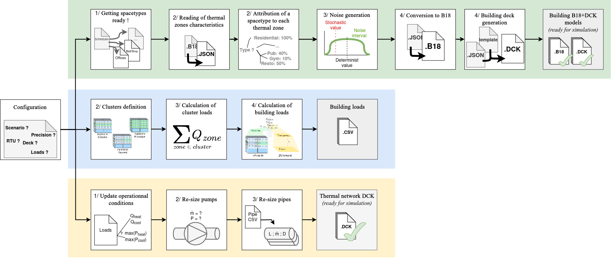

Documentation of TRNBpy Tool
Name |
TRNBpy |
|---|---|
Version |
2.0 |
Licence |
MIT |
Author |
MEUNIER Guilwen |
Last update |
October 2026 |
Overview of TRNBpy
As shown in following figure, the TRNBpy tool serves three distinct purposes:
First, to simplify and automate the entry of operational assumptions into building structural files (green path). At the end of these steps, TRNBpy will generate building files in JSON and B18 formats, as well as the necessary decks (DCK) to run simulations using TRNEdit.
Second, to scale the model loads to the building loads (blue path). To do this, three similar algorithms enable scaling for each of the three methods: Detailed, Tailored, and Prototype.
Third, to generate a deck file to simulate a heating and cooling system sized according to the input loads (yellow path).
